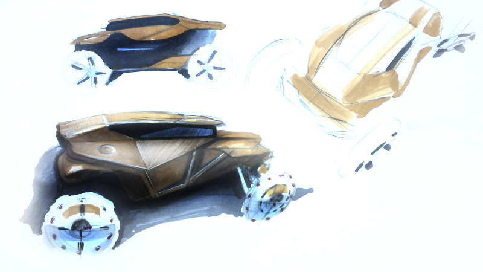

Este curso te permite obtener las herramientas necesarias para el renderizado de vehículos de diferentes segmentos y utilidades. También podrás explorar diversos métodos de representación gráfica para plasmar ideas de forma efectiva.


Perspectiva y Puntos de Fuga
Este curso te permite obtener las herramientas necesarias para el renderizado de vehículos de diferentes segmentos y utilidades. También podrás explorar diversos métodos de representación gráfica para plasmar ideas de forma efectiva.

Color y Renderizado
Los colores y texturas se logran a través de diferentes técnicas y herramientas, como marcadores, pasteles, temperas, lápices policromos, o bolígrafos. Con estas técnicas podrás mostrar con más realismo los volúmenes, texturas y brillos del vehículo.

Render de Vistas Generales
El objetivo es lograr dibujar un vehículo y renderizarlo desde diferentes puntos de vista, logrando armonía y lógica entre cada uno de ellos. La correcta interpretación de la proporción del vehículo es clave para lograr una exposición clara de tu idea.

Herramientas
- Hojas A3
- Lápiz negro/ blanco (Policromo), bolígrafo, Pinceles finos, Algodón.
- Rotuladores de colores (Kurecolor- Gama de grises y colores básicos a elección).
- Pasteles a la tiza. Tempera Blanca.
Perfil del módulo
El Sketch es una herramienta clave para desarrollar y plasmar ideas. Este curso permite adquirir las diferentes técnicas para exponer tu concepto de forma más realista.
Objetivos
- Comprender el volumen de un vehículo en todas sus perspectivas
- Ilustrar y renderizar tus ideas para lograr mayor realismo
- Desarrollar destreza con el trazo y el desarrollo de una idea.
Temario
- Perspectivas
- Puntos de Fuga
- Renderizado básico con luz y sobra. Tubo de materiales.
- Renderizado de vehículos en diferentes vistas.
- Renderizado de diferentes materiales aplicados a vehículos. (Vidrios, pintura brillante/ opaca, Plasticos, metales)
Régimen de asistencia, calificación y promoción
Para la aprobación y certificación del curso se debe cumplir con el 80 % de asistencia y la entrega de la totalidad de los Trabajos Prácticos a través de un porfolio, en soporte digital.

"Croquizado y Sketching Vehicular"
Diploma de aprobación certificado por UTN-INSPT según disposición Nro. n/15
+ certificado propio

Docente a cargo
D.I. Patricio Szendiuch ver +
Soy Diseñador Industrial egresado de la Universidad de Palermo. Trabajo en Ford, mi puesto es Supplier Technical Assistant y me desenvuelvo en conjunto con el área de diseño en Ford Camazari (Brasil), tanto en validaciones de aspecto y calidad de diseño interior y exterior del vehiculo.
Coordinador académico: Prof. D.I. Victor Peterle
8 clases (3 hs semanales + 1 clase de certificación)
Presencial (min: 5 / max: 15 alumnos)
$ 1400
El pago puede realizarse en efectivo, en la institución, o bien mediante depósito bancario (Lun a Vie 09 a 16hs).Consulta beneficios si hacés mas de un curso a la vez.